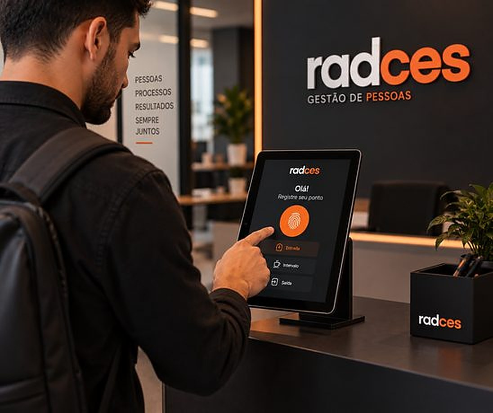

Início / Soluções
Controle de ponto e jornadaGestão inteligente da jornada. Sem relógio de ponto. Sem burocracia.
Uma solução digital, automatizada e segura, que dispensa máquinas tradicionais de ponto. O registro é feito digitalmente e a empresa acompanha a jornada dos colaboradores de forma centralizada.

Mais controle com menos trabalho manual
- Mais tecnologia: processos digitais e automatizados.
- Mais economia: sem investimento em máquinas de ponto.
- Mais controle: gestão completa da jornada.
- Mais segurança: registros organizados e rastreáveis.
- Mais produtividade: menos trabalho manual para o RH.
Quer modernizar o controle de ponto?
Mostramos como funciona e como implantar na sua empresa.
Conheça também
Recrutamento e Seleção
Conectamos empresas a profissionais alinhados à cultura, aos valores e às necessidades do negócio.
Saiba maisAdministração de Estágios
Cuidamos de todo o processo, da contratação ao acompanhamento, com segurança para empresa e estagiários.
Saiba maisTerceirização de Folha
Mais praticidade e segurança na folha de pagamento, com processos eficientes e em conformidade com a legislação.
Saiba maisMapeamento de Perfil Comportamental
Metodologias como DISC e BIG FIVE para analisar perfis, potencializar talentos e montar equipes mais estratégicas.
Saiba maisTreinamentos Corporativos
Desenvolvemos lideranças, equipes e times comerciais com treinamentos personalizados e focados em resultados.
Saiba mais